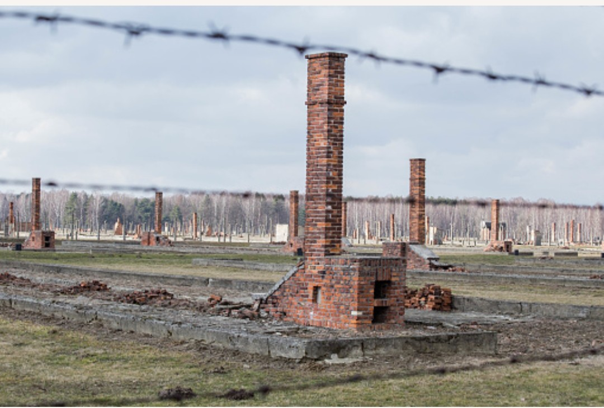

Les camps d’extermination sont des lieux créés par le régime nazi dans le cadre de sa politique de destruction systématique de populations entières. Leur fonction principale est la mise à mort immédiate et organisée, dans un processus industriel conçu pour tuer à grande échelle.
Ces sites sont distincts des camps de concentration : ils ne sont pas destinés à l’internement prolongé ou au travail forcé, mais à l’exécution rapide des victimes.
À partir de 1941, le régime nazi met en place une politique de destruction totale visant principalement les populations juives d’Europe, ainsi que d’autres groupes ciblés. Pour mener cette politique, des centres d’extermination sont construits dans les territoires occupés.
Leur objectif est de mettre en œuvre une mise à mort systématique, organisée et dissimulée, dans un cadre contrôlé par les SS.
Les camps d’extermination sont peu nombreux, mais leur rôle est central dans la politique génocidaire du régime nazi. Les principaux sites sont :
Chacun de ces lieux est conçu pour fonctionner comme un centre de mise à mort, avec des installations spécifiques destinées à exécuter les victimes et à dissimuler les traces.
Les camps d’extermination comportent généralement :
L’ensemble est conçu pour fonctionner rapidement, dans le secret, et sous le contrôle strict des SS.
Le fonctionnement des camps d’extermination repose sur un processus organisé, visant à éliminer les victimes dès leur arrivée. Les installations sont pensées pour permettre une mise à mort rapide, suivie de la destruction des corps.
Ce système, unique par son ampleur et son organisation, constitue l’un des aspects les plus tragiques et les plus sombres de l’histoire du XXᵉ siècle.
À partir de 1943, puis surtout en 1944, les autorités nazies cherchent à effacer les traces de leurs crimes. Les crématoires sont détruits, les fosses sont dissimulées, et les bâtiments sont rasés pour empêcher toute découverte.
Les ruines visibles aujourd’hui, notamment à Birkenau, témoignent de cette volonté de cacher les preuves.
À la fin de la guerre, les armées alliées découvrent les sites encore debout. Les survivants, très peu nombreux, témoignent pour que le monde comprenne la réalité de ces lieux.
Aujourd’hui, les anciens camps d’extermination sont des lieux de mémoire essentiels. Ils rappellent la nécessité de défendre la dignité humaine, de lutter contre la haine, et de transmettre l’histoire pour éviter que de telles tragédies ne se reproduisent.